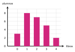
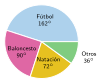
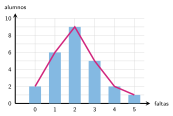
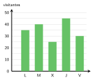
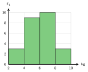

📝 Repaso de la unidad
Actividades de repaso
Escribe tu respuesta y después pulsa «Ver la solución» para corregirla tú. Los puntos dicen el nivel: ● básico, ●●● ampliación.
Para conocer las horas de sueño de los alumnos del colegio se pregunta a 3 alumnos de cada clase. Indica la población, la muestra, la variable y su tipo.
Solución
Población: todos los alumnos del colegio. Muestra: los alumnos preguntados. Variable: horas de sueño, cuantitativa continua.
¿Cómo te ha ido?
Clasifica: color de ojos, número de libros leídos en un año, estatura, provincia de nacimiento, número de calzado.
Solución
Cualitativa, discreta, continua, cualitativa, discreta.
¿Cómo te ha ido?
Indica si cada variable es cualitativa, cuantitativa discreta o cuantitativa continua.
- Color favorito.
- Número de hermanos.
- Estatura.
- Deporte que practicas.
- Tiempo de trayecto al colegio.
- Talla de zapato.
Solución
a) Cualitativa b) Discreta c) Continua d) Cualitativa e) Continua f) Discreta
¿Cómo te ha ido?
Para saber cuál es el deporte favorito de los alumnos del colegio, Pedro pregunta solo a los compañeros de su equipo de fútbol. ¿Es una buena muestra? Explica por qué y propón una forma mejor de elegirla.
Solución
No. Mejor, alumnos al azar de todos los cursos.
¿Cómo te ha ido?
Lee el texto y contesta.
Los delegados quieren pedir a la dirección que el recreo dure más. En el colegio hay 450 alumnos de secundaria. Para saber qué opinan, preguntan a los 30 alumnos de su clase de 1.º ESO, y 22 dicen que quieren un recreo más largo. En la reunión con la dirección, los delegados afirman: «Casi tres de cada cuatro alumnos del colegio quieren un recreo más largo».
- ¿Cuál es la población? ¿Y la muestra?
- ¿Qué porcentaje de la muestra quiere un recreo más largo?
- ¿Es una buena muestra para sacar esa conclusión? ¿Por qué?
- Propón una forma mejor de elegir la muestra.
Solución
- Población: los 450 alumnos. Muestra: los 30 de la clase.
- Un \(73{,}3\)%.
- No.
- Respuesta abierta. Por ejemplo, alumnos al azar de cada curso.
¿Cómo te ha ido?
Para saber cuánto tiempo dedican a los deberes los alumnos de 1.º ESO de Cantabria, se pregunta a 300 alumnos de 1.º ESO de diez colegios. Indica la población, la muestra, el individuo y la variable.
Solución
Población: todos los alumnos de 1.º ESO de Cantabria. Muestra: los 300 alumnos preguntados. Individuo: cada alumno de 1.º ESO. Variable: tiempo dedicado a los deberes, cuantitativa continua.
¿Cómo te ha ido?
Indica la población y la variable de cada estudio, y di de qué tipo es la variable.
- La marca de móvil de los profesores del colegio.
- El número de páginas de los libros de la biblioteca del colegio.
- La duración de las canciones de una lista de reproducción.
Solución
- Población: los profesores del colegio. Variable: marca de móvil, cualitativa.
- Población: los libros de la biblioteca. Variable: número de páginas, discreta.
- Población: las canciones de la lista. Variable: duración, continua.
¿Cómo te ha ido?
Una fábrica de Astillero produce 5 000 tornillos al día. Cada día se mide la longitud de 50 tornillos elegidos al azar.
- Indica la población, la muestra, el individuo y la variable. ¿De qué tipo es la variable?
- ¿Qué porcentaje de la producción se mide?
Solución
- Población: los 5 000 tornillos del día. Muestra: los 50 tornillos medidos. Individuo: cada tornillo. Variable: longitud, cuantitativa continua.
- El 1%.
¿Cómo te ha ido?
Se estudia el número de goles que marcó cada equipo de una liga en la última temporada. ¿Cuál es la población? ¿Qué es un individuo? ¿Qué variable se estudia y de qué tipo es?
Solución
Población: los equipos de la liga. Individuo: cada equipo. Variable: número de goles, cuantitativa discreta.
¿Cómo te ha ido?
Indica si cada variable es cualitativa, cuantitativa discreta o cuantitativa continua.
- Número de goles en un partido.
- Peso de una mochila.
- Color del coche familiar.
- Veces que vas al cine en un mes.
- Duración de una llamada.
- Marca de zapatillas.
- Litros de agua que bebes al día.
- Número de ventanas de una casa.
Solución
a) Discreta b) Continua c) Cualitativa d) Discreta e) Continua f) Cualitativa g) Continua h) Discreta
¿Cómo te ha ido?
¿Es cualitativa o cuantitativa? Si es cuantitativa, di si es discreta o continua.
- Nacionalidad.
- Edad en años cumplidos.
- Grupo sanguíneo.
- Habitantes de un pueblo.
- Instrumento que tocas.
- Alumnos de una clase.
Solución
a) Cualitativa b) Discreta c) Cualitativa d) Discreta e) Cualitativa f) Discreta
¿Cómo te ha ido?
Indica si cada variable cuantitativa es discreta o continua.
- Número de primos.
- Longitud de un salto.
- Velocidad de un coche.
- Páginas de un libro.
- Tiempo en correr 100 m.
- Canastas en un partido.
Solución
a) Discreta b) Continua c) Continua d) Discreta e) Continua f) Discreta
¿Cómo te ha ido?
Corrige las frases falsas.
- La muestra nunca tiene más individuos que la población.
- El color de pelo es una variable cuantitativa.
- El número de mascotas es una variable discreta.
- La temperatura es una variable continua.
Solución
- Verdadero.
- Falso: es cualitativa.
- Verdadero.
- Verdadero.
¿Cómo te ha ido?
Di si en cada caso se estudia toda la población o solo una muestra.
- Para saber la nota media de su clase, el tutor usa las notas de todos sus alumnos.
- Una fábrica prueba cada día 50 galletas para controlar su calidad.
- Para conocer la opinión de los españoles sobre un tema, se llama por teléfono a 2 000 personas.
- En un censo se pregunta a todos los habitantes de un país.
Solución
- Población.
- Muestra.
- Muestra.
- Población.
¿Cómo te ha ido?
Escribe tres valores posibles de cada variable.
- Mes de nacimiento.
- Número de hermanos.
- Estatura de un alumno de 1.º ESO.
- Medio de transporte.
Solución
Respuesta abierta. Por ejemplo: a) enero, mayo, octubre b) 0, 1, 2 c) \(1{,}48\) m, \(1{,}55\) m, \(1{,}62\) m d) andando, autobús, bici
¿Cómo te ha ido?
Queremos estudiar a los alumnos de tu clase. Escribe dos variables cualitativas, dos cuantitativas discretas y dos cuantitativas continuas.
Solución
Respuesta abierta. Por ejemplo: cualitativas, color favorito y deporte; discretas, número de hermanos y de primos; continuas, estatura y peso.
¿Cómo te ha ido?
¿De qué tipo es cada variable? Explica tu respuesta.
- El dorsal de un corredor.
- El número de corredores que terminan una carrera.
- El prefijo telefónico de un país.
- El tiempo que tarda cada corredor en llegar a la meta.
Solución
- Cualitativa: el dorsal es una etiqueta y no tiene sentido sumarlo.
- Cuantitativa discreta.
- Cualitativa: también es una etiqueta.
- Cuantitativa continua.
¿Cómo te ha ido?
Lucía dice: «La talla de camiseta (S, M, L, XL) es una variable cuantitativa, porque unas tallas son más grandes que otras». ¿Tiene razón? Explícalo.
Solución
No. Sus valores no son números, así que es cualitativa, aunque se puedan ordenar.
¿Cómo te ha ido?
Explica por qué en estos estudios se usa una muestra y no toda la población.
- La duración de las bombillas que fabrica una empresa.
- Lo que piensan votar los españoles en unas elecciones.
- La calidad del agua de una playa.
Solución
- Para medir cuánto dura una bombilla hay que gastarla: si se probaran todas, no quedaría ninguna para vender.
- Son millones de personas: preguntar a todas sería muy caro y lento.
- No se puede analizar toda el agua del mar; se recogen unos frascos.
¿Cómo te ha ido?
Indica si cada muestra representa bien a la población. Explica por qué.
- Para saber cuántas horas de televisión ven los alumnos del colegio, se pregunta a 5 alumnos de cada clase elegidos al azar.
- Para saber si a los vecinos de Astillero les gusta el nuevo parque, se pregunta a las personas que están en el parque un domingo.
- Para saber qué música prefieren los jóvenes de Cantabria, se pregunta a la salida de un concierto de rock.
- Para conocer la estatura media de los alumnos de 1.º ESO, se mide a los del equipo de baloncesto.
Solución
- Sí: hay alumnos de todas las clases, elegidos al azar.
- No: quienes van al parque seguramente opinan mejor de él.
- No: a esas personas les gusta el rock más que a los demás.
- No: los jugadores de baloncesto suelen ser más altos.
¿Cómo te ha ido?
Un instituto tiene 600 alumnos y se quiere preguntar al 15% de ellos.
- ¿Cuántos alumnos forman la muestra?
- En 1.º ESO hay 160 alumnos. Si se pregunta también al 15% de ellos, ¿cuántos alumnos de 1.º estarán en la muestra?
Solución
- 90 alumnos.
- 24 alumnos.
¿Cómo te ha ido?
Lee el texto y contesta.
El colegio quiere cambiar el menú del comedor, donde comen 180 alumnos. La dirección pregunta a 36 de ellos, elegidos al azar entre todos los cursos, cuál es su primer plato favorito y cuántas piezas de fruta comen al día. Quince alumnos eligen macarrones.
- ¿Cuál es la población? ¿Y la muestra?
- ¿Qué dos variables se estudian? ¿De qué tipo es cada una?
- ¿Qué porcentaje de los alumnos del comedor ha contestado?
- ¿Qué porcentaje de la muestra prefiere macarrones? Redondea a las décimas.
Solución
- Población: los 180 alumnos del comedor. Muestra: los 36 preguntados.
- Primer plato favorito, cualitativa; piezas de fruta al día, cuantitativa discreta.
- El 20%.
- Un \(41{,}7\)%.
¿Cómo te ha ido?
Una revista de videojuegos hace una encuesta en su página web y publica: «El 85% de los jóvenes juega a videojuegos todos los días». ¿Es fiable la conclusión? Explica qué problema tiene la muestra.
Solución
No. Solo contestan lectores de una revista de videojuegos, que juegan más que la mayoría, y además cada uno decide si contesta. La muestra no representa a todos los jóvenes.
¿Cómo te ha ido?
Quieres saber cuántos minutos tardan en llegar al colegio los alumnos de tu centro.
- ¿Cuál es la población? ¿Y la variable? ¿De qué tipo es?
- Explica cómo elegirías una muestra de 40 alumnos para que represente bien a todo el centro.
- Escribe la pregunta que harías.
Solución
- Población: los alumnos del centro. Variable: tiempo de trayecto, cuantitativa continua.
- Respuesta abierta. Por ejemplo, alumnos al azar de todos los cursos, más o menos los mismos de cada uno.
- Respuesta abierta. Por ejemplo: «¿Cuántos minutos tardas en llegar al colegio?».
¿Cómo te ha ido?
Lee el texto y contesta.
Cada diez años se hace en España un censo de población y viviendas: se cuenta a todas las personas que viven en el país. De cada persona se anota el sexo y el lugar de nacimiento, y de cada vivienda, cuántas personas viven en ella, cuántas habitaciones tiene y su superficie en metros cuadrados.
- ¿Se estudia una muestra o toda la población?
- Clasifica las cinco variables del texto.
- ¿Por qué crees que no se hace un censo todos los años?
Solución
- Toda la población.
- Sexo y lugar de nacimiento, cualitativas; personas que viven en la vivienda y número de habitaciones, discretas; superficie, continua.
- Respuesta abierta. Por ejemplo, porque es muy caro y lleva mucho trabajo.
¿Cómo te ha ido?
Se ha preguntado a 20 alumnos cuántas mascotas tienen en casa:
Haz la tabla de frecuencias absolutas y relativas.
Solución
0 mascotas: 5 (\(0{,}25\)); 1: 9 (\(0{,}45\)); 2: 4 (\(0{,}20\)); 3: 1 (\(0{,}05\)); 4: 1 (\(0{,}05\)).
¿Cómo te ha ido?
Medio de transporte de 25 alumnos para venir al colegio: andando (A), autobús (B), coche (C), bicicleta (Bi).
A, B, A, C, A, B, A, Bi, C, A, A, B, C, A, Bi, A, B, A, C, A, B, A, C, Bi, A
Haz la tabla con frecuencias absolutas, relativas y porcentajes.
Solución
A: 12; \(0{,}48\); 48%. B: 5; \(0{,}2\); 20%. C: 5; \(0{,}2\); 20%. Bi: 3; \(0{,}12\); 12%.
¿Cómo te ha ido?
Hemos preguntado a 20 alumnos cuántas veces han ido al cine este trimestre:
2, 0, 1, 3, 1, 2, 2, 0, 1, 4, 2, 1, 3, 2, 0, 2, 1, 2, 3, 2
- Haz la tabla de frecuencias absolutas, relativas y porcentajes.
- Dibuja el diagrama de barras.
- Calcula la media, la mediana y la moda.
Solución
- 0: 3; \(0{,}15\); 15%. 1: 5; \(0{,}25\); 25%. 2: 8; \(0{,}40\); 40%. 3: 3; \(0{,}15\); 15%. 4: 1; \(0{,}05\); 5%.
- Diagrama de barras.
- \(\bar{x} = 1{,}7\); Me \(= 2\); Mo \(= 2\).
¿Cómo te ha ido?
En una encuesta a 200 personas sobre su fruta favorita, el 30% elige manzana, el 25% plátano, el 20% naranja y el resto otras frutas. ¿Cuántas personas eligen cada opción?
Solución
Manzana: 60; plátano: 50; naranja: 40; otras (25%): 50.
¿Cómo te ha ido?
Hemos lanzado un dado 20 veces y han salido estos resultados:
3, 5, 1, 6, 3, 2, 4, 3, 6, 5, 1, 3, 2, 6, 4, 3, 5, 6, 2, 3
Haz la tabla de frecuencias absolutas. ¿Qué resultado ha salido más veces?
Solución
1: 2; 2: 3; 3: 6; 4: 2; 5: 3; 6: 4. El que más ha salido es el 3.
¿Cómo te ha ido?
Cuenta cuántas veces aparece cada vocal en la frase «LA ESTADÍSTICA ES ÚTIL» y haz la tabla de frecuencias absolutas. ¿Cuántas vocales hay en total?
Solución
A: 3; E: 2; I: 3; O: 0; U: 1. En total, 9 vocales.
¿Cómo te ha ido?
En un conjunto de 50 datos, calcula la frecuencia relativa y el porcentaje de un valor que aparece:
- 10 veces.
- 25 veces.
- 4 veces.
- 50 veces.
Solución
a) \(0{,}2\); 20% b) \(0{,}5\); 50% c) \(0{,}08\); 8% d) 1; 100%
¿Cómo te ha ido?
Las frecuencias relativas de una tabla son \(0{,}15\), \(0{,}30\), \(0{,}20\) y una cuarta que se ha borrado. ¿Cuánto vale? ¿Por qué?
Solución
\(0{,}35\), porque las frecuencias relativas suman 1.
¿Cómo te ha ido?
Lanzas una moneda 50 veces y salen 23 caras. Haz la tabla de frecuencias absolutas, relativas y porcentajes.
Solución
Cara: 23; \(0{,}46\); 46%. Cruz: 27; \(0{,}54\); 54%.
¿Cómo te ha ido?
Se ha preguntado a 40 alumnos por su color favorito. Completa la tabla.
| Color | \(f_i\) | \(h_i\) | % |
| Rojo | 10 | ||
| Azul | 14 | ||
| Verde | 6 | ||
| Amarillo | 8 | ||
| Negro | 2 | ||
| Total | 40 |
Solución
Rojo: \(0{,}25\); 25%. Azul: \(0{,}35\); 35%. Verde: \(0{,}15\); 15%. Amarillo: \(0{,}20\); 20%. Negro: \(0{,}05\); 5%. Total: 1; 100%.
¿Cómo te ha ido?
Horas de deporte a la semana de los alumnos de una clase:
| Horas | 0 | 1 | 2 | 3 | 4 |
| \(f_i\) | 2 | 5 | 8 | 6 | 4 |
- ¿A cuántos alumnos se ha preguntado?
- ¿Cuántos hacen 2 horas de deporte?
- ¿Cuántos hacen más de 2 horas?
- ¿Qué porcentaje hace menos de 2 horas?
Solución
- 25 alumnos.
- 8 alumnos.
- 10 alumnos.
- 28%.
¿Cómo te ha ido?
Notas del último examen de inglés de una clase:
7, 8, 5, 9, 9, 7, 6, 10, 6, 6, 7, 4, 8, 6, 7, 9, 7, 5, 8, 5, 4, 8, 7, 5, 6
Haz la tabla de frecuencias absolutas, relativas y porcentajes. ¿Qué porcentaje de alumnos ha sacado un 8 o más?
Solución
4: 2; \(0{,}08\); 8%. 5: 4; \(0{,}16\); 16%. 6: 5; \(0{,}20\); 20%. 7: 6; \(0{,}24\); 24%. 8: 4; \(0{,}16\); 16%. 9: 3; \(0{,}12\); 12%. 10: 1; \(0{,}04\); 4%. Un 8 o más: 32%.
¿Cómo te ha ido?
Fruta que han traído para el almuerzo 30 alumnos: manzana (M), plátano (P), naranja (N) y pera (Pe).
M, M, M, P, Pe, M, P, N, P, P, N, P, P, M, M, P, P, M, P, N, Pe, N, P, N, N, M, P, Pe, P, M
Haz la tabla de frecuencias absolutas, relativas y porcentajes.
Solución
M: 9; \(0{,}3\); 30%. P: 12; \(0{,}4\); 40%. N: 6; \(0{,}2\); 20%. Pe: 3; \(0{,}1\); 10%.
¿Cómo te ha ido?
En una encuesta a 80 personas, 28 prefieren ir de vacaciones a la playa, 36 a la montaña y el resto a una ciudad. Haz la tabla de frecuencias absolutas, relativas y porcentajes.
Solución
Playa: 28; \(0{,}35\); 35%. Montaña: 36; \(0{,}45\); 45%. Ciudad: 16; \(0{,}20\); 20%.
¿Cómo te ha ido?
Completa la tabla de frecuencias.
| Valor | \(f_i\) | \(h_i\) | % |
| 1 | 6 | ||
| 2 | \(0{,}40\) | ||
| 3 | 9 | ||
| 4 | 3 | ||
| Total | 30 | 1 | 100 |
Solución
1: 6; \(0{,}20\); 20%. 2: 12; \(0{,}40\); 40%. 3: 9; \(0{,}30\); 30%. 4: 3; \(0{,}10\); 10%.
¿Cómo te ha ido?
En una clase de 25 alumnos, el 40% tiene perro, el 24% tiene gato, el 12% tiene otra mascota y el resto no tiene ninguna. Haz la tabla de frecuencias absolutas y relativas.
Solución
Perro: 10; \(0{,}40\). Gato: 6; \(0{,}24\). Otra: 3; \(0{,}12\). Ninguna: 6; \(0{,}24\).
¿Cómo te ha ido?
Marcos ha preguntado a 20 compañeros cuántos primos tienen y ha hecho esta tabla. ¿Qué error ha cometido? Corrígela.
| Primos | \(f_i\) | \(h_i\) |
| 0 | 5 | \(0{,}5\) |
| 1 | 8 | \(0{,}8\) |
| 2 | 4 | \(0{,}4\) |
| 3 | 3 | \(0{,}3\) |
Solución
Ha dividido entre 10 y no entre 20: sus frecuencias relativas suman 2. Las correctas son \(0{,}25\); \(0{,}40\); \(0{,}20\) y \(0{,}15\).
¿Cómo te ha ido?
Se pregunta a 75 personas cómo van al trabajo: 33 en coche, 21 en autobús, 12 en tren y 9 en bici. Calcula con la calculadora las frecuencias relativas y los porcentajes.
Solución
Coche: \(0{,}44\); 44%. Autobús: \(0{,}28\); 28%. Tren: \(0{,}16\); 16%. Bici: \(0{,}12\); 12%.
¿Cómo te ha ido?
En una clase de 28 alumnos, Ana ha recibido 11 votos, Bruno 7, Carla 8 y hay 2 votos en blanco.
- Haz la tabla de frecuencias absolutas, relativas (con dos decimales) y porcentajes (con un decimal).
- ¿Qué porcentaje de los votos no fue para Ana?
Solución
- Ana: 11; \(0{,}39\); \(39{,}3\)%. Bruno: 7; \(0{,}25\); 25%. Carla: 8; \(0{,}29\); \(28{,}6\)%. Blanco: 2; \(0{,}07\); \(7{,}1\)%.
- Un \(60{,}7\)%.
¿Cómo te ha ido?
Minutos que tardan 20 alumnos en llegar al colegio:
7, 3, 29, 21, 13, 34, 9, 14, 15, 15, 8, 38, 16, 17, 0, 9, 19, 22, 17, 23
Agrupa los datos en los intervalos \([0, 10)\), \([10, 20)\), \([20, 30)\) y \([30, 40)\) y haz la tabla de frecuencias absolutas y relativas.
Solución
\([0, 10)\): 6; \(0{,}30\). \([10, 20)\): 8; \(0{,}40\). \([20, 30)\): 4; \(0{,}20\). \([30, 40)\): 2; \(0{,}10\).
¿Cómo te ha ido?
Lee el texto y contesta.
Alba ha anotado el tiempo que hizo en Santander cada día de abril. Hubo 12 días de lluvia, 8 días nublados sin lluvia y el resto fueron días de sol. Su abuelo dice que «en abril llovió más de un tercio de los días».
- ¿Qué variable ha estudiado Alba? ¿De qué tipo es?
- Haz la tabla de frecuencias absolutas, relativas (con dos decimales) y porcentajes.
- ¿Tiene razón su abuelo?
Solución
- El tiempo que hizo cada día: cualitativa.
- Lluvia: 12; \(0{,}40\); 40%. Nublado: 8; \(0{,}27\); \(26{,}7\)%. Sol: 10; \(0{,}33\); \(33{,}3\)%.
- Sí: llovió el 40% de los días, y un tercio es un \(33{,}3\)%.
¿Cómo te ha ido?
En una hoja de cálculo escribes los valores 0, 1, 2, 3 y 4 en las celdas A2 a A6, y sus frecuencias absolutas 3, 7, 6, 3 y 1 en las celdas B2 a B6.
- ¿Qué fórmula escribes en B7 para calcular el total? ¿Qué resultado da?
- ¿Qué fórmula escribes en C2 para la frecuencia relativa, de modo que puedas copiarla hacia abajo?
- ¿Y en D2 para el porcentaje? ¿Qué porcentaje sale en D3?
Solución
=SUMA(B2:B6); da 20.=B2/$B$7=C2*100; en D3 sale 35.
¿Cómo te ha ido?
Completa la tabla. Fíjate primero en la fila de A para averiguar el total.
| Respuesta | \(f_i\) | \(h_i\) |
| A | 4 | \(0{,}10\) |
| B | \(0{,}30\) | |
| C | 10 | |
| D | ||
| Total |
Solución
Total: 40. B: 12. C: \(0{,}25\). D: 14; \(0{,}35\).
¿Cómo te ha ido?
En 1.º A, 12 de los 25 alumnos vienen andando al colegio. En 1.º B vienen andando 13 de 30. ¿En qué clase es mayor la proporción de alumnos que vienen andando? ¿Por qué hay que comparar las frecuencias relativas y no las absolutas?
Solución
En 1.º A (\(0{,}48\) frente a \(0{,}43\)). Porque las clases no tienen el mismo número de alumnos.
¿Cómo te ha ido?
De 60 alumnos, la tercera parte lee todos los días, el 25% lee una vez a la semana, \(\frac{1}{6}\) lee una vez al mes y el resto casi nunca. Haz la tabla de frecuencias absolutas, relativas (con dos decimales) y porcentajes.
Solución
Cada día: 20; \(0{,}33\); \(33{,}3\)%. Cada semana: 15; \(0{,}25\); 25%. Cada mes: 10; \(0{,}17\); \(16{,}7\)%. Casi nunca: 15; \(0{,}25\); 25%.
¿Cómo te ha ido?
¿Qué tipo de gráfico usarías para representar cada estudio?
- El deporte favorito de los alumnos de la clase.
- La temperatura a mediodía durante una semana.
- El número de hermanos de los alumnos.
Solución
- Barras o sectores.
- Gráfico de líneas.
- Diagrama de barras.
¿Cómo te ha ido?
De 25 alumnos, 12 vienen andando (A), 5 en autobús (B), 5 en coche (C) y 3 en bicicleta (Bi). Calcula los grados de cada sector y dibuja el diagrama.
Solución
A: \(172{,}8^\circ\); B: \(72^\circ\); C: \(72^\circ\); Bi: \(43{,}2^\circ\).
¿Cómo te ha ido?
Un anuncio muestra un diagrama de barras donde el eje vertical empieza en 90 y compara las ventas de dos marcas: 95 y 100. ¿Por qué es engañoso?
Solución
La barra de 100 parece el doble que la de 95, pero solo es un 5% mayor.
¿Cómo te ha ido?
Se pregunta a 30 alumnos por su deporte favorito: fútbol 12, baloncesto 6, natación 5, surf 4 y otros 3.
- Calcula los porcentajes.
- Calcula el ángulo de cada sector y dibuja el diagrama de sectores.
Solución
- 40%; 20%; 16,7%; 13,3%; 10%
- 144º, 72º, 60º, 48º y 36º
¿Cómo te ha ido?
El diagrama de barras muestra cuántos libros leyeron en verano los 25 alumnos de una clase.

- ¿Cuántos alumnos leyeron 2 libros?
- ¿Cuál es la moda?
- ¿Cuántos libros leyeron en total? ¿Cuál es la media?
- ¿Qué porcentaje de alumnos leyó más de 2 libros?
Solución
- 7
- 1 libro
- 45 libros; media \(1{,}8\)
- \(7:25=28\%\)
¿Cómo te ha ido?
Representa en un diagrama de barras los datos de la actividad «Mascotas en casa». ¿Cuál es la moda?
Solución
Moda: 1 mascota.
¿Cómo te ha ido?
De 40 alumnos, 18 vienen andando, 12 en autobús, 8 en coche y 2 en bici. Calcula los grados de cada sector y dibuja el diagrama.
Solución
Andando: 162º; autobús: 108º; coche: 72º; bici: 18º.
¿Cómo te ha ido?
Una heladería ha vendido estos helados de enero a junio: 120, 150, 260, 410, 640 y 980.
- Representa los datos en un gráfico de líneas.
- ¿Entre qué dos meses aumentan más las ventas?
- ¿Cuál es la media mensual de ventas? Redondea a las unidades.
Solución
- Gráfico de líneas.
- Entre mayo y junio.
- 427 helados.
¿Cómo te ha ido?
Lee el texto y contesta.
El ayuntamiento ha pesado lo que se recogió en una semana en los contenedores del barrio. En el amarillo (envases) había 340 kg; en el azul (papel y cartón), 280 kg; en el verde (vidrio), 420 kg, y en el marrón (orgánico), 560 kg. Quieren publicar los resultados en un cartel con un diagrama de sectores.
- ¿Qué variable se estudia? ¿De qué tipo es?
- ¿Cuántos kilos se recogieron en total?
- Calcula el porcentaje de cada contenedor.
- Calcula los grados de cada sector.
Solución
- El tipo de residuo: cualitativa.
- 1 600 kg.
- Amarillo, \(21{,}25\)%; azul, \(17{,}5\)%; verde, \(26{,}25\)%; marrón, 35%.
- Amarillo, \(76{,}5\)º; azul, 63º; verde, \(94{,}5\)º; marrón, 126º.
¿Cómo te ha ido?
Calcula cuántos grados mide el sector de un diagrama que representa:
- El 50%.
- El 25%.
- El 10%.
- El 5%.
- El 30%.
- El 75%.
Solución
a) \(180^\circ\) b) \(90^\circ\) c) \(36^\circ\) d) \(18^\circ\) e) \(108^\circ\) f) \(270^\circ\)
¿Cómo te ha ido?
¿Qué porcentaje representa un sector que mide:
- \(90^\circ\)?
- \(36^\circ\)?
- \(180^\circ\)?
- \(72^\circ\)?
- \(54^\circ\)?
Solución
a) 25% b) 10% c) 50% d) 20% e) 15%
¿Cómo te ha ido?
¿Por qué en un histograma las barras van juntas y en un diagrama de barras van separadas?
Solución
En el histograma la variable es continua y los intervalos van seguidos, sin huecos entre ellos. En el diagrama de barras los valores son aislados.
¿Cómo te ha ido?
Se ha preguntado a 25 alumnos en qué estación es su cumpleaños: 7 en primavera, 9 en verano, 5 en otoño y 4 en invierno.
- Dibuja el diagrama de barras.
- Calcula los grados de cada sector y dibuja el diagrama de sectores.
Solución
- Diagrama de barras.
- Primavera: \(100{,}8^\circ\); verano: \(129{,}6^\circ\); otoño: \(72^\circ\); invierno: \(57{,}6^\circ\).
¿Cómo te ha ido?
Se pregunta a 25 familias cuántos televisores tienen en casa: 1 familia no tiene ninguno, 8 tienen uno, 10 tienen dos, 5 tienen tres y 1 tiene cuatro.
- Dibuja el diagrama de barras y el polígono de frecuencias.
- ¿Cuántas familias tienen por lo menos dos televisores?
Solución
- Diagrama de barras y polígono.
- 16 familias.
¿Cómo te ha ido?
El diagrama muestra el deporte favorito de 40 alumnos.

- ¿Cuál es la moda?
- ¿Cuántos alumnos prefieren cada deporte?
- ¿Qué porcentaje representa cada sector?
Solución
- Fútbol.
- Fútbol, 18; baloncesto, 10; natación, 8; otros, 4.
- 45%, 25%, 20% y 10%.
¿Cómo te ha ido?
El diagrama de barras y el polígono muestran las faltas de ortografía que han cometido los alumnos de una clase en un dictado.

- ¿Cuántos alumnos no han cometido ninguna falta?
- ¿Cuántos alumnos hay en la clase?
- ¿Cuál es la moda? ¿Cuántos alumnos han cometido más de 3 faltas?
- Calcula la media de faltas por alumno.
Solución
- 2 alumnos.
- 25 alumnos.
- Moda: 2 faltas. Más de 3: 3 alumnos.
- \(\bar{x} = \dfrac{52}{25} = 2{,}08\) faltas.
¿Cómo te ha ido?
El diagrama muestra cuántas personas visitaron la biblioteca municipal cada día de una semana.

- ¿Qué día hubo más visitantes? ¿Y menos?
- ¿Cuántas personas fueron a la biblioteca en toda la semana?
- ¿Cuántos visitantes hubo de media cada día?
- ¿Qué porcentaje de los visitantes fue el viernes? Redondea a las décimas.
Solución
- Más, el jueves; menos, el miércoles.
- 175 personas.
- 35 visitantes.
- Un \(17{,}1\)%.
¿Cómo te ha ido?
Minutos que estudiaron ayer 30 alumnos:
| Minutos | \([0, 30)\) | \([30, 60)\) | \([60, 90)\) | \([90, 120)\) |
| \(f_i\) | 4 | 11 | 9 | 6 |
- Dibuja el histograma.
- ¿Cuántos alumnos estudiaron una hora o más?
- ¿Qué porcentaje estudió menos de media hora? Redondea a las décimas.
Solución
- Histograma.
- 15 alumnos.
- Un \(13{,}3\)%.
¿Cómo te ha ido?
El histograma muestra el peso de las mochilas de los alumnos de una clase.

- ¿Cuántas mochilas pesan entre 4 y 6 kg (sin llegar a 6)?
- ¿Cuántas mochilas se han pesado?
- ¿En qué intervalo hay más mochilas?
- ¿Qué porcentaje de las mochilas pesa 6 kg o más?
Solución
- 9 mochilas.
- 25 mochilas.
- En \([6, 8)\).
- El 52%.
¿Cómo te ha ido?
Hugo reparte así las 24 horas de un día de colegio: duerme 9 h, está en el colegio 6 h, come 2 h, hace los deberes 2 h y dedica 5 h al ocio.
- Calcula los grados de cada sector y dibuja el diagrama.
- ¿Qué porcentaje del día pasa durmiendo?
Solución
- Dormir: \(135^\circ\); colegio: \(90^\circ\); comer: \(30^\circ\); deberes: \(30^\circ\); ocio: \(75^\circ\).
- Un \(37{,}5\)%.
¿Cómo te ha ido?
El helado favorito de 30 alumnos es: chocolate 14, vainilla 8, fresa 6 y limón 2. Escribe la tabla en una hoja de cálculo y haz un diagrama de barras y uno de sectores.
- ¿Qué porcentaje mostrará la hoja para el chocolate? Redondea a las décimas.
- Calcula los grados de cada sector.
Solución
- Un \(46{,}7\)%.
- Chocolate: \(168^\circ\); vainilla: \(96^\circ\); fresa: \(72^\circ\); limón: \(24^\circ\).
¿Cómo te ha ido?
En un periódico aparece un diagrama de sectores con los resultados de una encuesta: sí, 45%; no, 35%; no sabe, 30%. ¿Qué está mal?
Solución
Los porcentajes suman 110% y deberían sumar 100%.
¿Cómo te ha ido?
Para mostrar que sus ventas se han duplicado, una tienda dibuja una bolsa de dinero y, al lado, otra bolsa el doble de alta y el doble de ancha. ¿Por qué engaña el dibujo?
Solución
La bolsa grande ocupa cuatro veces más superficie que la pequeña, así que parece que las ventas se han multiplicado por 4.
¿Cómo te ha ido?
En un diagrama de sectores sobre cómo van al trabajo 60 personas, el sector «tren» mide \(48^\circ\), el sector «autobús» \(120^\circ\), el sector «coche» \(150^\circ\) y el resto es «bici».
- ¿Cuántos grados mide el sector «bici»?
- ¿Cuántas personas eligen cada medio de transporte?
Solución
- \(42^\circ\).
- Tren, 8; autobús, 20; coche, 25; bici, 7.
¿Cómo te ha ido?
Álex quiere representar las temperaturas máximas de cada día de una semana con un diagrama de sectores. ¿Es una buena idea? ¿Qué gráfico usarías tú? Explícalo.
Solución
No. Las temperaturas no son partes de un total, así que no tiene sentido repartir un círculo entre ellas. Es mejor un gráfico de líneas o de barras.
¿Cómo te ha ido?
Calcula la media, mediana, moda y rango: 3, 7, 5, 3, 9, 5, 3.
Solución
\(\bar{x} = 5\); \(Me = 5\); \(Mo = 3\); rango 6.
¿Cómo te ha ido?
Halla la media, la mediana, la moda y el rango.
- \(3, 5, 5, 6, 8, 9\)
- \(12, 7, 9, 7, 10\)
- \(2, 4, 4, 4, 6, 6, 9, 13\)
Solución
- \(\bar{x} = 6\); Me \(= 5{,}5\); Mo \(= 5\); rango 6
- \(\bar{x} = 9\); Me \(= 9\); Mo \(= 7\); rango 5
- \(\bar{x} = 6\); Me \(= 5\); Mo \(= 4\); rango 11
¿Cómo te ha ido?
- \(5, 8, 11\)
- \(2, 4, 6, 8, 10\)
- \(1, 1, 1, 9\)
- \(10, 20, 30, 40\)
- ¿En qué caso la media representa peor a los datos? ¿Por qué?
Solución
a) \(8\) b) \(6\) c) \(3\) d) \(25\) e) En el c).
¿Cómo te ha ido?
Calcula los parámetros de los datos \(4, 7, 7, 9, 3, 6, 7\).
Solución
Media: \(6{,}14\). Mediana: 7. Moda: 7. Rango: 6.
¿Cómo te ha ido?
Calcula la media y la mediana de \(12, 15, 9, 20, 18, 10\).
Solución
Media: 14. Mediana: \(13{,}5\).
¿Cómo te ha ido?
Edades de los participantes en un taller: 11, 12, 12, 13, 11, 12, 14, 13. Calcula la media, la mediana, la moda y el rango.
Solución
\(\bar{x} = 12{,}25\); \(Me = 12\); \(Mo = 12\); rango 3.
¿Cómo te ha ido?
| Goles | 0 | 1 | 2 | 3 |
| Partidos | 3 | 5 | 8 | 4 |
Calcula la media de goles por partido y la moda.
Solución
\(\bar{x} = \dfrac{33}{20} = 1{,}65\); \(Mo = 2\).
¿Cómo te ha ido?
Justifica tu respuesta con un ejemplo.
- La media siempre es uno de los datos.
- Un conjunto de datos puede tener más de una moda.
- Si a todos los datos les sumamos 2, la media aumenta 2.
- Un dato muy grande cambia mucho la mediana.
Solución
- Falso
- Verdadero
- Verdadero
- Falso
¿Cómo te ha ido?
Diego dice que la mediana de \(8, 3, 9, 5, 4\) es 9 porque es el número que está en medio. Explica el error y halla la mediana correcta.
Solución
La mediana es 5.
¿Cómo te ha ido?
Estas son las notas de un examen: 6, 7, 4, 8, 9, 5, 7, 6, 7, 10. Cópialas en una hoja de cálculo y usa las funciones PROMEDIO, MEDIANA, MODA, MAX y MIN. Haz también un gráfico de barras.
Solución
Media \(6{,}9\); mediana 7; moda 7; rango 6.
¿Cómo te ha ido?
Las temperaturas máximas de una semana de junio en Santander fueron 18, 20, 19, 22, 21, 19 y 16 ºC. Calcula la media (con una cifra decimal), la mediana, la moda y el rango.
Solución
Media \(19{,}3\) ºC; mediana 19 ºC; moda 19 ºC; rango 6 ºC.
¿Cómo te ha ido?
La tabla muestra los goles que ha marcado un equipo en 20 partidos.
| Goles | 0 | 1 | 2 | 3 | 4 |
| Partidos | 3 | 5 | 6 | 4 | 2 |
Calcula el total de goles, la media, la moda y la mediana.
Solución
Total: 37 goles. Media: \(1{,}85\). Moda: 2. Mediana: 2.
¿Cómo te ha ido?
La edad media de un grupo de 5 amigos es de 13 años. Se les une un amigo de 19 años. ¿Cuál es ahora la edad media?
Solución
14 años
¿Cómo te ha ido?
Las alturas en cm de 8 jugadores de un equipo son: 152, 158, 149, 160, 165, 155, 158 y 163. Calcula la media, la mediana, la moda y el rango.
Solución
Media: \(157{,}5\) cm. Mediana: 158 cm. Moda: 158 cm. Rango: 16 cm.
¿Cómo te ha ido?
En una tienda han vendido estas zapatillas en una semana:
| Talla | 36 | 37 | 38 | 39 | 40 |
| Pares | 4 | 7 | 9 | 6 | 4 |
Calcula con la calculadora la talla media. ¿Cuál es la moda? ¿Y la mediana?
Solución
Media: \(37{,}97\). Moda: 38. Mediana: 38.
¿Cómo te ha ido?
Escribe en las celdas A1 a A10 las horas que duermen diez compañeros: 8, 9, 7, 8, 10, 8, 6, 9, 8 y 7. Usa las funciones =PROMEDIO(A1:A10), =MEDIANA(A1:A10), =MODA(A1:A10) y =MAX(A1:A10)-MIN(A1:A10).
- Escribe los resultados.
- Cambia el 10 por un 15. ¿Qué parámetros cambian?
Solución
- Media 8, mediana 8, moda 8 y rango 4.
- La media (\(8{,}5\)) y el rango (9).
¿Cómo te ha ido?
Las notas de Irene en los cuatro primeros exámenes son 6, 7, 5 y 8. ¿Qué nota necesita en el quinto para que su media sea 7?
Solución
Un 9
¿Cómo te ha ido?
Tiempos (en segundos) de dos corredores en 5 carreras de 100 m:
| Ana | 14 | 15 | 14 | 16 | 16 |
| Rosa | 12 | 18 | 13 | 17 | 15 |
Calcula la media y el rango de cada una. ¿Quién es más regular?
Solución
Ana: media 15, rango 2. Rosa: media 15, rango 6. Ana es más regular.
¿Cómo te ha ido?
Escribe cinco datos cuya media sea 6, la mediana 5 y la moda 4.
Solución
Respuesta abierta. Por ejemplo: 4, 4, 5, 8, 9.
¿Cómo te ha ido?
En una pequeña empresa, cuatro trabajadores cobran 1 200 € al mes y la jefa cobra 8 000 €.
- Calcula la media y la mediana de los sueldos.
- La empresa anuncia que «el sueldo medio es de más de 2 500 €». ¿Es verdad? ¿Qué parámetro representa mejor lo que cobra la mayoría?
Solución
- Media: 2 560 €. Mediana: 1 200 €.
- Sí. La mediana.
¿Cómo te ha ido?
La media de 5, 8, 6, 9 y 7 es 7. ¿Qué número hay que añadir para que la media de los seis datos sea 8?
Solución
13
¿Cómo te ha ido?
Las notas de un examen tienen media 5, mediana 5,5, moda 6 y rango 7.
- El profesor sube 1 punto a todos. ¿Cómo quedan los cuatro parámetros?
- Si en vez de eso multiplicara todas las notas por 2, ¿cómo quedarían?
Solución
- Media 6, mediana \(6{,}5\), moda 7 y rango 7.
- Media 10, mediana 11, moda 12 y rango 14.
¿Cómo te ha ido?
Colores de las mochilas de 9 alumnos: azul, negro, rojo, azul, negro, negro, verde, azul, negro. ¿Cuál es la moda? ¿Se puede calcular la media? ¿Por qué?
Solución
Moda: negro. No se puede calcular la media, porque la variable es cualitativa.
¿Cómo te ha ido?
| Hermanos | 0 | 1 | 2 | 3 | 4 |
| Alumnos | 3 | 7 | 6 | 3 | 1 |
Calcula la media, la mediana y el rango.
Solución
\(\bar{x} = \dfrac{32}{20} = 1{,}6\); \(Me = \dfrac{1 + 2}{2} = 1{,}5\); rango 4.
¿Cómo te ha ido?
La media de las notas de 10 alumnos es 6. Al revisarlas, la profesora ve que copió un 3 donde debía poner un 8. ¿Cuál es la media correcta?
Solución
\(\dfrac{60 - 3 + 8}{10} = 6{,}5\)
¿Cómo te ha ido?
🧩 Paso a paso
Así se resuelven los ejercicios tipo de la unidad. Cada bloque es una orden, como en Scratch: los bloques se leen de arriba abajo y los que tienen forma de C se repiten o solo se hacen si se cumple la condición.